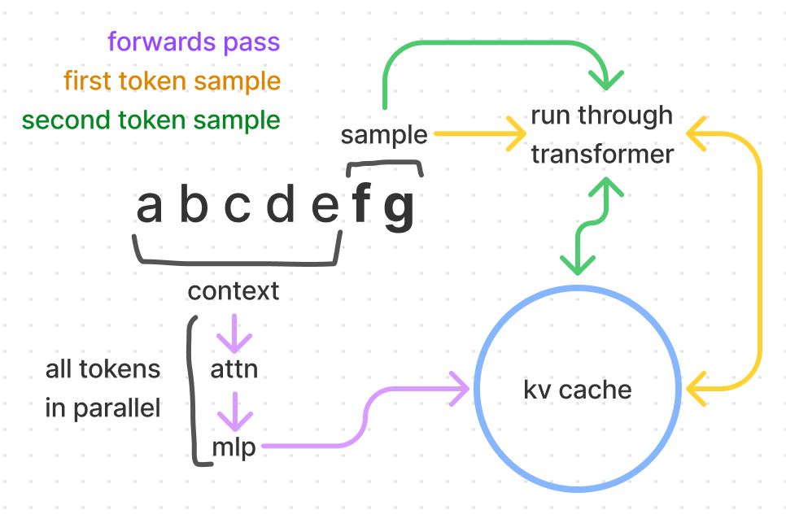
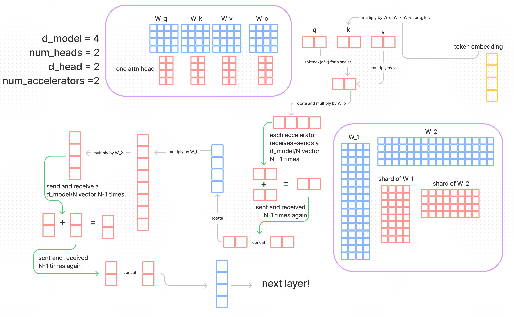
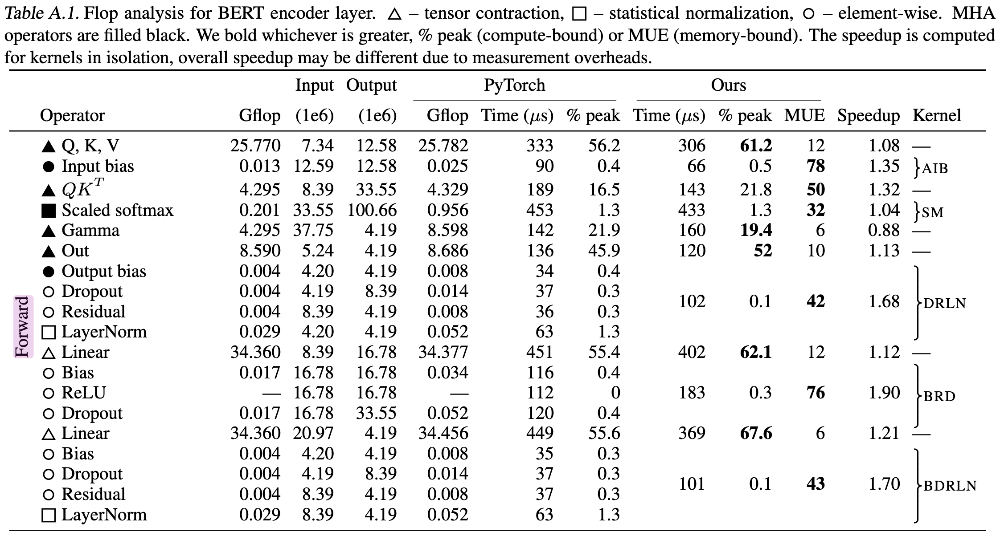

This article presents detailed few-principles reasoning about large language model inference performance, with no experiments or difficult math (a previous title for this was "Transformer Inference Performance Arithmetic"). There is an impressive amount of understanding that can be acquired this way! It's helped me make better predictions, form better explanations and more easily identify problem points for work.
This post assumes some prior knowledge about transformers, say at having understood most of The Illustrated Transformer but not having internalised all of it. Familiarity with this parameter counting post which I developed along with this one may also be useful.
This is entirely focused on decoder-only architectures but can be extrapolated to encoder-decoder. Meaning we're focusing on the performance of taking models like GPT or Gopher and sampling from them. The layer blocks are the same as encoder-only models but since we don't typically sample from those it may not be too relevant.
kv cache
For sampling, transformer inference consists of processing a provided prompt/context (which can happen in parallel), and then sampling additional tokens one by one. The process needs to refer to the context from the prompt and previously sampled tokens for the key and value components of its self-attention layers. This context is provided in matrices known as the kv cache, aka past cache (the open source GPT-2 implementation called it past).
The purpose of this is to avoid recalculations of those vectors every time we sample a token. With the computed \(k, v \) values, we can save quite a bit of computation at the cost of some storage. Per token, the number of bytes we store is
The first factor of 2 is to account for the two vectors, \(k\) and \(v\). We store that per each layer, and each of those values is a \( n_\text{heads}\times d_\text{head}\) matrix. Then multiply by 2 again for the number of bytes (we'll assume 16-bit formats throughout the post).
The weights that we multiply by the token embeddings are \(W_\text{k}, W_\text{v} \in \mathbb{R}^{d_\text{model}\times d_\text{model}}\) and then each token embedding is \(t_\text{e}\in \mathbb{R}^{1\times d_\text{model}}\). So then the flops to compute \(k\) and \(v\) for all our layers is
To calculate compute for \(k\) we multiply \(t_\text{e}\) by \(W_\text{k}\), which takes \(2 \cdot {d_\text{model}}^2\) flops. We have another factor of 2 as we do \(k\) and \(v\) and then repeat for \(n_\text{layers}\).
How many flops in a matmul?
The computation for a matrix-vector multiplication is \(2mn\) for \(A \in \mathbb{R}^{m\times n}, b \in \mathbb{R}^{n}\). A matrix-matrix is \(2mnp\) for \(A \in \mathbb{R}^{m\times n}, B \in \mathbb{R}^{n \times p}\). The \(mn\) factor makes a lot of sense, and the two comes from the fact that a matmuls are composed of multiply(1)-add(2) operations. More in these lecture notes.
This means for a 52B parameter model (taking Anthropic's, where \(d_\text{model} = 8192\) and \(n_\text{layers} = 64\)). The flops are
Say we have an A100 GPU, which does \(312\text{e}12\) flops per second and \(1.5\text{e}12\) bytes per second of memory bandwidth. The following are numbers for just the kv weights and computations.
Flops vs Memory Boundedness
Flops vs memory boundedness is something we deal with a lot for transformer inference, but also in deep learning optimisation in general. To do the computations we do, we need to load weights which costs memory bandwidth. We assume (correctly, this has been very well optimised) that we can start the computations while we load the weights. Flop bound would then mean that there is time when nothing is being passed through memory, and memory bound would mean that no floperations are occuring. Nvidia uses the term math bandwidth which I find really cute.
None of the model architecture matters anymore — we get a distinct ratio here of 208 given this hardware specification. This means that if we're going to compute kv for one token, it'll take the same amount of time to compute for up to 208 tokens! Anything below, we're memory bandwidth bound. Above, flops bound. If we used the rest of our weights to do a full forwards pass (run the rest of the transformer) on our context, it's also 208 (both the numerator and denominator get a factor of 6 added). This will be reasoned thoroughly in future sections.
For a 52B model full forwards pass, that's \(12\cdot 2 \cdot n_\text{layers} \cdot {d_\text{model}}^2 / 1.5\text{e}12 \approx 69\) milliseconds for up to 208 tokens (in practice, we'd use four GPUs in parallel so it would actually be ~17 milliseconds, more in following sections). If we had 416 (double) tokens in the context, then it would take twice as long, and 312 tokens would take 1.5 times as long.

Calculating for a kv cache token is exactly 1/6th of the compute of passing the token through the model. In general, these forwards passes (what we experience in getting logits, embeddings and training) are very cheap because of the parallelism that is possible as opposed to sampling where we're forced to read through all the weights for each token and do the autoregression.
This doesn't mean that 1/6th of the time is saved! Let's assume we are flops bound. Then at each sample step, we save \(2 \cdot 2 \cdot n_\text{tokens} \cdot n_\text{layers} \cdot {d_\text{model}}^2 \div 312\text{e}12\) flops while the decoding steps costs \(2 \cdot 12 \cdot n_\text{layers} \cdot {d_\text{model}}^2 \div 312\text{e}12\). Thus at each step we save 1/6 of the time multiplied by the number of tokens (big!) — which increases as we sample tokens, meaning that past caching gets us linear complexity sampling.
This is not the whole story (given overheads and tradeoffs associated with storing this cache). If we're serving small batches we may be memory bandwidth bound rather than flops, in which case we won't even want to use the past cache and will instead happily do recomputations and spend the flops (we'll already be paying the memory cost to do our sampling).
capacity
We have a solid idea of the two things we store in our GPUs — kv cache and weights. Let's start worry about what that means for our precious space!
Nvidia A100 GPUs (which are generally speaking, the best GPUs we can get for inference) have a standard of 40GB of capacity. There are ones with 80GB and higher memory bandwidth (2e12 instead of 1.5e12) but they aren't available with any large cloud providers yet which means they aren't real to me!
Given the parameter count, we can multiply by two to get bytes. So to calculate the size of the weights for a 52B model.
Oh no! This doesn't fit in one GPU! We'd need at least three GPUs just to have all the weights loaded in (will discuss how to do that sharding later). That leaves us \(120-104 = 16GB\) left for our kv cache. Is that enough? Back to our equation for kv cache memory per token, again with a 52B model;
And then we'd do \(16/0.002 \approx 8000\) tokens can fit into our kv cache with this GPU set up, or that we could do up to a batch size 4 where each request has up to 2048 tokens (and higher sizes for less tokens). It's annoying because maybe we run out of room to do batch sizes as high as we like. On the other hand, if our batch size is 4 then we're memory bound (4 < 208) and should forego the kv cache to give us room to do extra computations.
For four GPUs, we'd get \(56/0.002 \approx 23000\). We definitely want to go for the four GPUs since we'll want to be able to do higher batch sizes, and it's silly to to divide powers of two over three GPUs. But it's not just batch size! If we have high volume, then we'd have multiple instances of our models. We approximately want each instance to be able to do as large as a batch size as possible, as we pay the cost of storing the weights anyway.
There's some extra space used by intermediate calculation steps, but they're negligible.
model parallelism
I'm not going to build up full understanding of model parallelism and all the implementation details, because many have done so. But we will build out the parts of the understanding that are useful to figure out the communication overhead!
The outcome of model parallelism, is that the cost of passing all the weights through through memory and the flops are all divided over the degree (number of accelerators we use).
How do we split up our weights and run all the computations we need? We have to pay some latency to communicate between the models — when does it occur, how often and how much?
We will assume tensor parallel (also sometimes [poorly] dubbed model parallel) where we will split down the middle of the model. Each accelerator will execute as much as it can with its shards of the weights and will communicate whenever synchronisation is required. A more naive way is pipeline parallel, where each GPU will hold onto a fraction of the layers. This does successfully even out the weight loading cost, but has the obvious silly that all but one GPU will be idling! In training you could pipeline through it (as the first batch moves onto the next GPU, start on a new batch on the first GPU) but it doesn't work out for sampling.
The only place where pipeline parallel does better is communications. A pipeline parallel model would communicate \(d_\text{model}\) per accelerator, while a model parallel does \(N\cdot d_\text{model}\) per layer where \(N\) is the number of accelerators. Here we introduce the last constant for our A100 GPUs which is a communication bandwith of 300GB/s. The doc marks it as 600GB/s because Nvidia is adding up 300GB/s into each chip and 300GB/s out simultaneously rather than using a bidirectional number (which will be more intuitive for our calculations).

In this diagram, we start at the yellow where we insert our token embeddings into the bottom on the model. The purple boxes outline how our weights would be split across the accelerators, and we work with an extremely tiny model so we can draw everything to scale. A general idea is that if we have two matrices \(X\) and \(Y\) we can shard both of them and multiply the shards. This doesn't actually complete the matmul of \(X\cdot Y\), and an easy way to tell (other than our ability to multiply matrices) is that if we concatenated the result of multiplying the shards, we get too big of a matrix. Instead, we would want to communicate, compute a shard sum, communicate that sum back out and then concatenate for the output of \(X \cdot Y\).
For attention the parallelism is intuitive from the fact that we have multiple heads. We go through most of the attention layer without communication because our attention heads are concatenated to multiply by \(W_o\). After we multiply by \(v\), we multiply the result by our shard of \(W_o\) to get a shard of \(o_s \in \mathbb{R}^{d_\text{model}\times n_\text{heads}/N}\). Then each accelerator will communicate its own shard to all the others, and all the others will communicate their shards back. This is \((N-1)d_\text{model}/N\) of comms cost. Each accelerator will do an even share of the addition to get the output project, then do the same communication they did last time and the individual hosts will do the concatenation (which is instant).
The MLP layer is by nature very similar! Just like we have \(W_o\) to project our multi-headed attention results back down to a vector of length \(d_\text{model}\), we have \(W_1\in \mathbb{R}^{4\times d_\text{model}}\) and \(W_2\in \mathbb{R}^{d_\text{model}\times 4}\). The same two communications are done at the end of the MLP.
There are some things missed like LayerNorm (which is a linear operation, easy to shard) or ReLU that all don't incur communication cost. Ultimately we do \(4 \cdot (N - 1)d_\text{model}/N\) bytes of communication.
latency calculations
We've discussed the capacity fairly thoroughly, mapped out comms in the model parallelism section and discussed general compute steps.

Our latency calculations are mostly about the flops vs memory boundedness. If we have a small number of multiplies to do per parameter, then maybe we'll be throttled by memory bandwidth. Flops are increased by both batch size and number of parameters, while memory is only increased by number of parameters.
For comms, it's not about boundedness, but rather about adding a latency term and a throughput term (the 300GB/s). Something tricky about the latency side of this figure is that it's not reported, so the best I can do is guess "approximately small", which we'll approximate to 10 microseconds.
Because of the compute factors, to calculate the latency of a single token decoding step we'd have two formulas - one for memory bandwidth bound (small batch) and another for flops bound (large batch). For large batch, we'll drop the latency factor for communications, in practice, we'd want to profile to find out.
Equations for a small batch (say 1, so we can drop the batch factor) would be; (where \(N\) is the number of accelerators)
There is \(2 \cdot P\) because we need to pass all the parameters through the memory, and each parameter is two bytes. \(A_\text{bm}\) is the accelerator memory bandwidth, and this cost is split across accelerators. For comms, we have \( 4 \cdot n_\text{layers} \) and then the 10 microseconds that we made up. It leaves out a bunch of factors, but I'm happy throwing them away for simplicity as the latency is guessed anyway (and comms is small relative to compute, which we'll see in a bit).
For large batches (say 512), where \(B\) is the batch size;
Where \(A_f\) is the flops of the accelerator and \(A_c\) is the comms bandwidth. We do \(2\cdot P\) flops of operations, which can be intuited by the fact that we matmul through all the parameters, and as mentioned earlier, a matrix-vector multiplication is \(2mn\) given \(A \in \mathbb{R}^{m\times n}, b \in \mathbb{R}^{n}\).
For comms, we see the four (I'll round that \(N-1\) factor to \(N\)) communications each of a \(d_{model}\) size vector per layer as explained in the model parallelism section. Then it's all divided by the comms bandwidth.
Let's play with a larger model, a Gopher sized 260B model on 16 GPUs.. For a small batch, it's 27 ms per token generated.
For a large batch of 512, for a total of 62ms per token generated (per batch, so in the 62ms 512 tokens are generated).
Also note here, that we don't want the comms to be greater than the compute! In these calculations I summed the comms and compute time, but logically there is no reason they can't at least be greater than thepartially run in parallel (though it's hard).
These numbers still land quite close to what should be acquired in practice, and lean towards being an optimal compute case, as it assumes optimal hardware usage, doesn't factor in softmaxes, assumes zero comms latency, the comms should be \(1/N\) percent slower and ignores many other smaller factors. I'd be surprised if someone had an inferencing setup that resulted in numbers lower than what this math comes up.
batch sizes
In the previous section, we have two calculations for when something memory bandwidth bound versus flops bound. To figure out which is at play we can compare these numbers;
We're dealing with the same ratio we found in the kv cache section. The min batch size for memory bandwidth bound is \(A_\text{bw}/A_c = 208\). This is a handy ratio!
To calculate when the capacity goes from mostly kv cache to mostly weights is trivial, and also isn't a binary in the same way (nothing special happens when your kv cache starts taking up more memory than your weights). Nothing special really happens with comms either. At some point in increasing the batch size, the throughput starts dwarfing the latency so we dropped that factor.
Something oversimplified about comms is that it happens at four different steps, which means we don't just want our compute time to be longer than our comms time, we want it to be the case at each step. For that, we have a weirder ratio: flops per byte of comms. Here's a nice chart of our computations, which will also be useful in the section below.
| \(q, k, v\) | \(o\) | \(w_1\) | \(w_2\) | |
|---|---|---|---|---|
| flops | \(3B({d_\text{model}}^2)\) | \(B({d_\text{model}}^2)\) | \(4B({d_\text{model}}^2)\) | \(4B({d_\text{model}}^2)\) |
| bytes of comms | \(B(d_\text{model})\) | \(B(d_\text{model})\) | \(B(d_\text{model})\) | \(B(d_\text{model})\) |
| flops/byte | \(3(d_\text{model})\) | \(d_\text{model}\) | \(4(d_\text{model})\) | \(4(d_\text{model})\) |
\(312\text{e}12 \div 300\text{e}9 = 1040\), which is our flops per byte of comms for our A100s. We want the values in the last row to be larger than our hardware flops per byte so that we stay flops bound (assuming we are not memory bound here). For any model with an embedding dimension over 1024 (per chip), we're safe! For 512, it's a little awkward.
flops counting
Previously;
We do \(2\cdot P\) flops of operations, which can be intuited by the fact that we matmul through all the parameters.
This is correct reasoning, but also incomplete. For complete reasoning, the easiest thing to do is to walk through all the transformer steps and check that we get \(2P\).
The following calculations are per token, per layer. I describe \(W_q, W_k, W_v \in \mathbb{R}^{d_\text{model}\times d_\text{model}}\) where it's more accurate to say we have \(W_q^i, W_k^i, W_v^i \in \mathbb{R}^{d_\text{model}\times d_\text{head}}\), where \(i\) goes up to \(n_\text{heads}\). But for the sake of calculating latency, I simplify \(W_q, W_k, W_v\) to include all the heads.
- Computing qkv
- Multiply \(t_e \in \mathbb{R}^{1\times d_\text{model}}\) by \(W_q, W_k, W_v \in \mathbb{R}^{d_\text{model}\times d_\text{model}}\)
- Flop count: \({2 \cdot 3 \cdot d_\text{model}}^2\)
- Calculate z
- This is \(\text{softmax}((q\cdot k)\div\sqrt{d_\text{head}}) \cdot v = z\)
- No matrices are multiplied, the number of flops is some factor of \(d_\text{model}\).
- Multiply by the output projection matrix
- Multiply \(W_o \in \mathbb{R}^{d_\text{model}\times d_\text{model}}\), by \(z \in \mathbb{R}^{d_\text{model}\times1}\)
- Flop count: \(2 \cdot {d_\text{model}}^2\)
- Feed-forward
- We have our MLP weights \(W_1 \in \mathbb{R}^{4\times d_\text{model}}, W_2 \in \mathbb{R}^{d_\text{model}\times 4} \) for two linear transformations (there's a ReLU in the middle, which small).
- Flop count: \(2\cdot 8 \cdot {d_\text{model}}^2 \)
- Some other things
- There are typically layernorms that happen after each attention, where the weights there are a vector of length \(d_\text{model}\).
- There's another linear layer and then a softmax that sits on top, which is our output (token) embedding or unembedding or de-embedding or embedding\(^{-1}\).
- The original transformer has a cosine absolute positional encoding scheme, which is an addition operation on the token embedding.
Adding up all the flops!
Subbing in our 8192 model, we should get about 100B flops;
103079215104 over two is about 51.5B. We're a lil under (we get 51.5B instead of 52B) but that's because token (un)embeddings are nearly a billion parameters. It would be reasonable to do the latency calculations with \(2\cdot 12\cdot n_\text{layers} \cdot {d_\text{model}}^2\) instead of \(2\cdot P\), but it's less than a 2% difference. There is a general pattern where as we get larger models, the calculations are closer approximations (eg, the comms cost, also we'll see this again in the next section).
What about the the calculation of \(z\) and all the other steps I didn't count? Those are all vector-vector (or even vector-scalar) operations, so they are built around a factor of \(d_\text{model}\) rather than \({d_\text{model}}^2\). Even if we had 100 of these operations, it would come out to a hundred million flops, which is 0.1% of the number of flops we counted.
the other calculations
Data Movement Is All You Need has a nice way of classifying operations. We have tensor contractions, which are the big matmuls we've mostly cared about (including the linear layers). Then there are statistical normalisations, the softmax and layernorm. Finally, which this post has completely ignored till now are element-wise operators, which are things like biases, dropouts and activations.
The reported flops on our hardware is specificially for the multiply-add operations so it would not be right to count it in there even if we could count the flops. Further more, it's probably going to cost memory to do the softmax read/writes and we're going to be memory bandwidth bound as that's what the bandwidth to flops ratio favours. Large batch sizes can't save us here as the read would have to occur for each item in the batch.
I'm going to break character on the first-principles aspect of this and discuss Table A.1 from the Data Movement Is All You Need paper. Here we see that the latency for softmax is actually slightly higher than the calculations for qkv. This is a little concerning!

There's even more latency that hasn't been factored in, for the same reason the softmax is memory bound, so is the multiplication of qk. The ReLU and dropout are also quite expensive.
We can also tell the softmax here is not perfectly fused by counting the number of read-writes we should need. In theory it can just be one read and one write (the standard is uh, four so I'm bullying a bit). For qk, it would be two reads and one write (in practice, the two reads can probably be saved). The three to one ratio then, indicates that the softmax is doing more memory passes than is optimal.
It's also worth noting that the percentage of time these operations take gets smaller quickly as model size increases as the memory will increase on the order of \(d_\text{model}\) while the flops increase on the order of \({d_\text{model}}^2\) — per layer. The paper is a 336M param model, \(d_\text{model} = 1024, n_\text{layers} = 24\).
I added up the latency of all the values in the "Ours" column that were memory bound, including the element-wise operations. The result is that these intermediate steps take 43% of the time. In a model of size 52B (where \(d_\text{model}\) is 8 times larger, we see these operations become negligible.
The duration of these memory bound intermediate operations will take 8 times longer as the operations are vectors of length \(d_\text{model}\). However, the number of flops will increase by 64 times, which means the flop time increases by 64 times.
So using the optimisations in that paper, a 52B model inference latency would be about 5% of these intermediate calculations we didn't factor into latency. But these numbers are from real runs! They include things that aren't perfect, and we can't have that in our arithmetic!
exercises
-
Given batch size, context length and next_n, how can we calculate the savings of using kv cache?
-
What overheads does the kv cache add in memory time?
-
Can we be memory bound on our forwards pass but flops bound at each sampling step?
-
What tradeoffs and calculations should we consider for using more GPUs than is necessary for capacity? Say for example, a 52B model on 8 or 16 GPUs instead of 4.
-
We came up with formulas to calculate time to predict one token. How would we calculate the time to do an entire sample, from doing the forwards pass on the context to predicting all the tokens requested?
-
In the capacity section, I say the memory of intermediate calculations are negligble. How small are they exactly?
-
In the batch sizes section, we went a bit off topic and talked about the flops per byte of communication. What are the tradeoffs if we had an embedding dimension size of 512?
-
We assume GPUs attached to the same host here, but could communicate GPUs between hosts like we do in training. AWS has 100gbps, is that worth using?
-
In model parallelism, we could in practice communicate all the shards and then have each accelerator do all the addition, instead of just a share of their addition. What are the latency implications there?
-
Try calculating the large batch speed for a 52B on 4xGPUs at batch size 256. The compute should be about 21ms and comms should be about 2ms.
acknowledgements
Would like to extend extremely large amount of credit to James Bradbury for his help in teaching me about performance concepts and being around for many iterations of this post in a very short time. To Jim Wu for teaching me how to write math notation and reviewing. Feedback from Mohammad Bavarian and Taylor Rogalski has been incorporated into this post for your enjoyment and benefit!
spin me in weight space
paint me in half precision
we're best in chaos